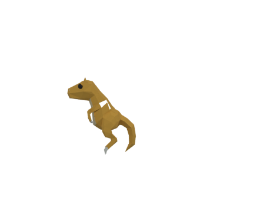
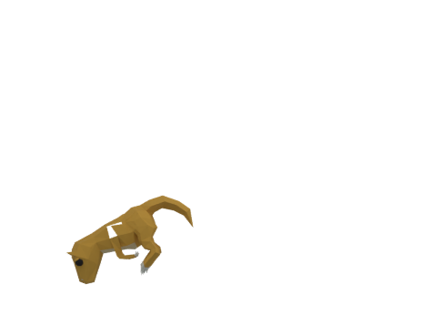
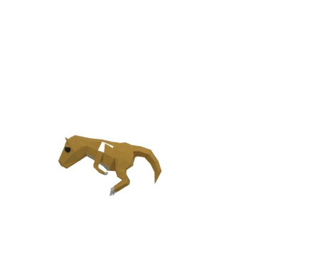
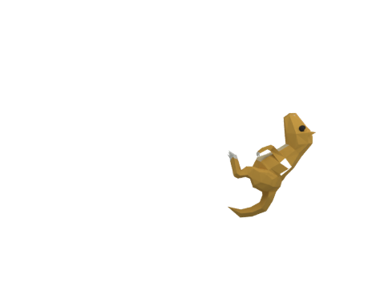

TOOLING PILOT R1 · 2026-09-06
工具已跑通，角色仍以原生像素稿交付。
以下模型來自 Quaternius CC0 Monster Pack，經過移除翅膀、重新配色與離線擺姿。它不是 M201 新造型，也不是原作動畫。四個 study frame 只是選擇姿勢用的編號；原始動畫的 frame、tick、loop 不由此檔決定。
ASEPRITE · PIXEL EXACT
既有 main_023 像素稿
32 × 16 原生格；9 種 RGBA 顏色含透明。匯入 Aseprite 再匯出，逐像素完全相同。這是既有稿的可編輯版本，不計入新增完成張數。
下載可編輯 Aseprite 檔
BLENDER · NEUTRAL STUDY
固定側面相機

464 × 368，相同投影；source origin = (184,268)，每原生單位 12 像素。這個 origin 的地面語義仍未確認。
下載可編輯 Blender 檔
MAIN_023 · PROXY
低伏方向研究

可用來觀察身體的側面轉動，但長嘴、長尾和手腕輪廓不符合已選定的 M201 A。
MAIN_056 · PROXY
頭部與腿部遮擋

現成 rig 沒有獨立手腕控制，無法精確重現原作手部端點；不接受為替換稿。
MAIN_062 · PROXY
向右旋轉研究

保留共同投影以觀察旋轉。這是人工近似姿势，沒有證明原作輪廓、軌跡或動畫時序。
試作結果：Blender 可以做相機與姿勢研究；此模型不適合直接轉為 M201。正式製作沿用現有 Aseprite／原生像素編譯流程，保留 056、062 等尚未完成的原稿缺口。
安裝與驗證紀錄 · Raising Home 明亮 UI 實機瀏覽器截圖 · 模型來源與渲染紀錄